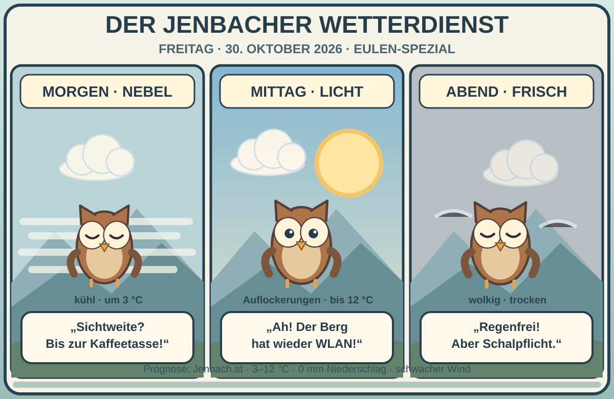

Nebel am Morgen.
Freigang am Nachmittag!
Der Freitag in Jenbach startet frisch und stellenweise neblig. Später lockert es auf, und die Sonne schaut vorbei. Unsere Wetter-Eule meldet: „Die Sicht ist erst nach dem zweiten Kaffee freigeschaltet.“

Morgens neblig, nachmittags freundlich
Die Wetterseite der Marktgemeinde Jenbach erwartet für Freitag, 30. Oktober einen wolkigen Vormittag, einen heiteren Nachmittag und einen wolkigen Abend. Das Temperaturspektrum liegt bei ungefähr 3–12 °C. Für die Tagesabschnitte werden 0,0 mm Niederschlag und meist schwacher Wind angegeben. Eine weitere Jenbach-Prognose zeigt für die frühen Stunden Nebel.
Einordnung: Die Angaben sind Vorhersagen und können sich ändern. Die Quelle der Gemeinde zeigt am Freitagvormittag etwa 2,6–9,5 °C, nachmittags etwa 8,2–12,3 °C. Nebel stammt aus einer ergänzenden Modellvorhersage; seine tatsächliche Auflösung ist unsicher. Für Bergtouren zusätzlich Höhenwetter und offizielle Warnungen prüfen.
„Im Nebel sieht selbst die Eule nur bis zur Kaffeetasse – aber nachmittags gibt’s wieder Panorama in HD.“Eigene humorvolle Formulierung · kein überliefertes Zitat